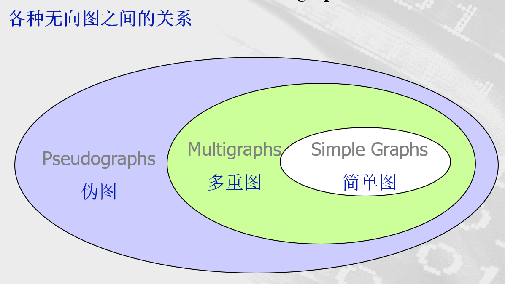
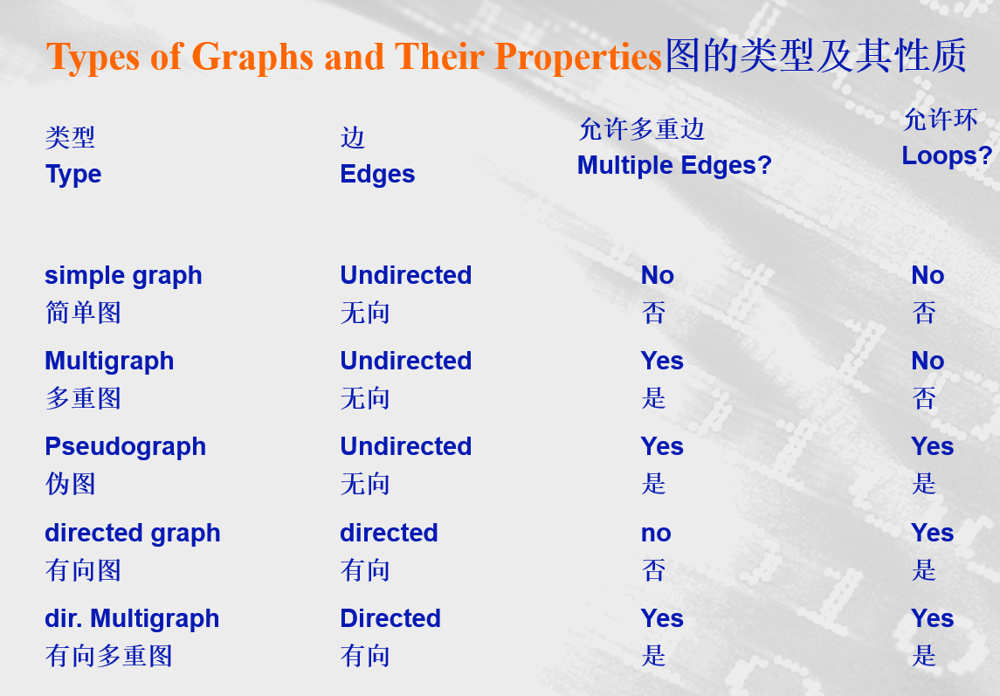
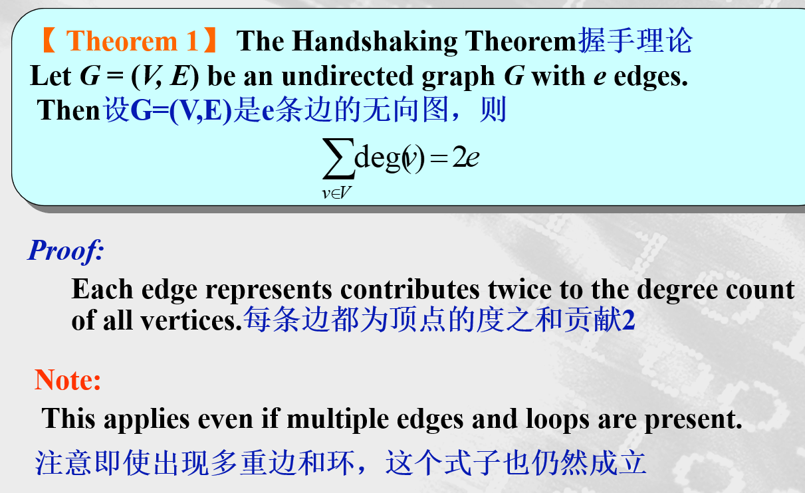
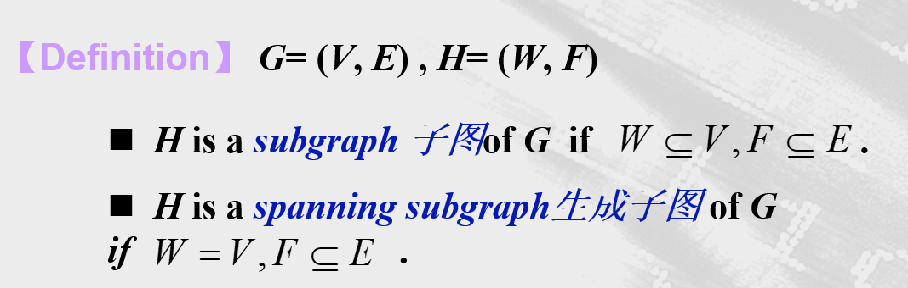

离散：0.图的概念和术语
图的概念：
1、图的定义：
一个图G=(V,E)由顶点的非空集V和边的集合E构成，每条边有一个或两个顶点与它相连，这样的顶点称为边的端点。边连接它的端点。
2、图的分类
- 无向图
- 简单图
- 简单图G=(V,E)是由非空顶点集V（有穷集）和边集E所组成的，V的不同元素的无序对称为边。简单图不存在环，且两个顶点间最多只有一条边
- 多重图
- 在简单图的基础上，多重图允许顶点对之间有多重边
- 伪图
- 伪图也是多重图，它可以存在环
- 简单图

-
有向图
- 有向图(V,E)是由非空顶点集V、边集E所组成的，边V中元素的有序对。允许有环(即相同元素的有序对)，但不允许在两个顶点之间有同向的多重边。
-
有向图
- 简单有向图
- 有向多重图
- 有向多重图G=(V,E)是由非空顶点集V、边集E组成的,其中可以存在多重边
- 混合图

图的术语：
degree of a vertex （顶点的度）
在无向图里顶点的度是与该顶点关联的边的数目，例外的情形是，顶点上的环为顶点的度做出双倍贡献
-
顶点v的度记做deg(v)
-
If deg(v) = 0,v is called isolated 孤立的
-
If deg(v) = 1, v is called pendant 悬挂的
定理一：握手理论

定理二
An undirected graph has an even number of vertices of odd degree. 无向图有偶数个奇数度顶点
有向图中的度
The in degree 入度 of a vertex v, denoted is the number of edges which terminate at v
顶点v的入度是以v作为终点的边数。
Similarly, the out degree 出度 of v, denoted , is the number of edges which initiate at v
顶点v的出度是以v作为起点的边数
定理三
Let G = (V, E) be a graph with direct edges. Then
在带有向边的图里，所有顶点的入度之和等于出度之和。这两个和都等于图的边数。
一些特殊的简单图
-
完全图
- n个顶点的完全图是在每对不同顶点之间都恰有一条边的简单图。通常用表示
-
圈图 (n>2)
- 指n个顶点围成一圈的图
-
轮图(n>2)
- 当给圈图添加另一个顶点，而且把这个顶点与圈图里n个顶点逐个连接时，就得出轮图。
-
偶图（二分图）
- 若把简单图G的顶点集分成两个不相交的非空集合和，使得图里的每一条边都连接着里的一个顶点与里的一个顶点，则G称为偶图。
子图：

设G是一个图，，以为边集，中边的端点全体为顶点集构成的子图，称为由导出的G的子图(边导出子图)，记为G()。
又设，以为顶点集，端点均在中的边的全体为边集，构成的子图，称为由导出的G的子图(点导出子图)，记为G()。
本博客所有文章除特别声明外，均采用 CC BY-NC-SA 4.0 许可协议。转载请注明来自 ZWN's blog！


评论